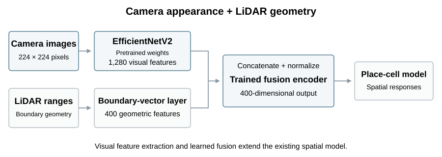
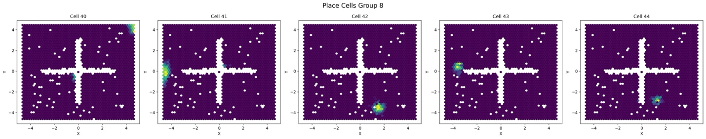
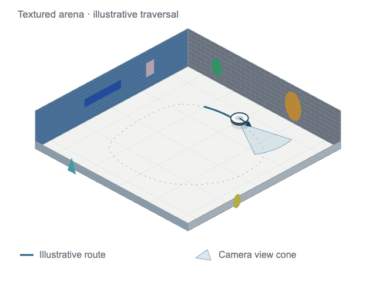
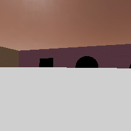
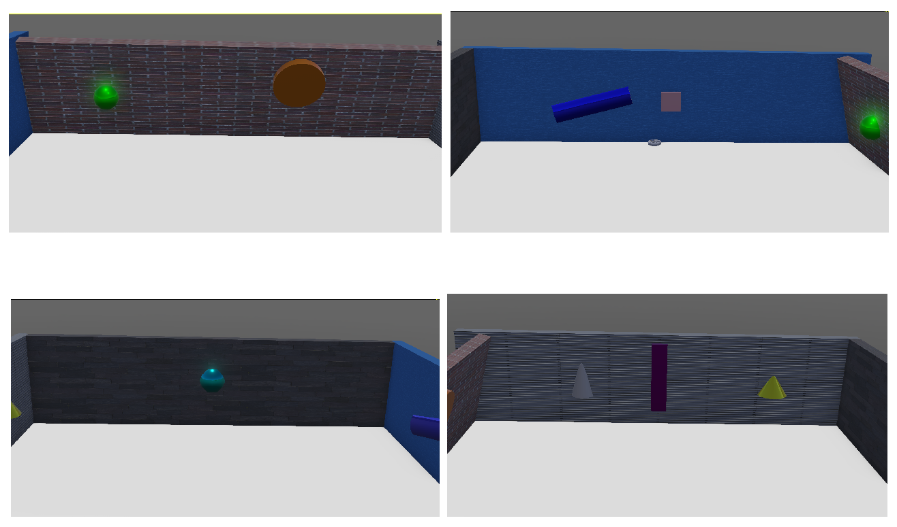

Bio-inspired Mapping and Navigation for Robots
University of Cincinnati · Team 47


Abstract
This capstone extended an established hippocampus-inspired navigation framework that uses boundary-vector, head-direction, place-cell, and reward-cell mechanisms to learn spatial representations and support goal-directed navigation.
I worked on the vision-embedding module, including feature extraction and performance evaluation, and coordinated the team's technical discussions. The system combined pretrained EfficientNetV2 features with LiDAR-derived boundary-vector responses through an autoencoder-based fusion layer.
Method
Pretrained EfficientNetV2 produces 1,280 visual features. These are concatenated with 400 boundary-vector responses and min-max normalized. An autoencoder is trained to reconstruct this 1,680-dimensional input through a 400-dimensional bottleneck; only its encoder is used in the navigation pipeline.


Results
Learned place-cell responses
Each map shows one cell's response across the arena. Green/yellow regions indicate stronger activity; purple regions indicate weaker activity. White gaps contain no plotted response samples.


What I observed. The evaluation showed local refinements in spatial coding, while perceptual aliasing persisted in symmetric layouts. Adding visual features did not resolve all spatial ambiguity.
Click either map to view the original five-cell panel. The camera replay and response maps come from separate archived examples.
Webots demonstration and camera replay



Camera views and platform context


These are qualitative exploration and spatial-response examples, without a matched navigation-success comparison. The technical report gives the full analysis. The capstone builds on the spatial-learning model of Alabi, Vanderelst, and Minai.